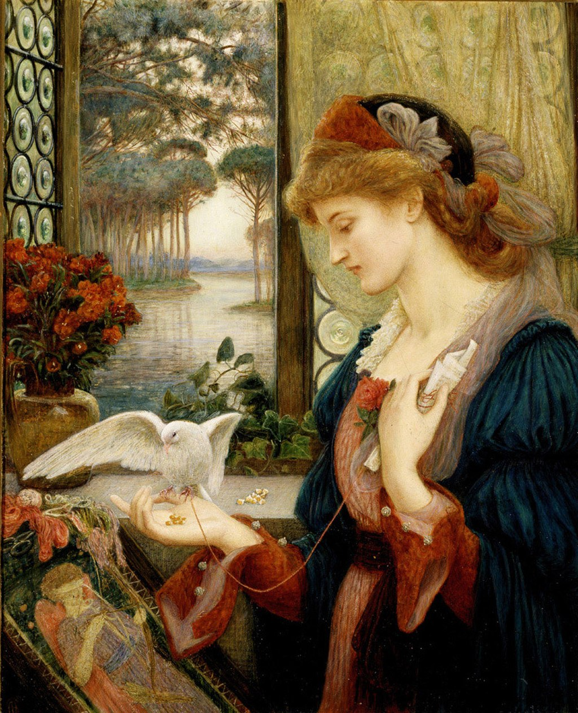

<head>
<meta charset="UTF-8" />
<meta name="keywords" content="drawing, painting" />
<meta name="description" content="drawings by Sunjy" />
<title>Sunjy</title>
<link rel="shortcut icon" type="image/x-icon" href="../../mImages/mCommon/favicon.ico" media="screen" />
<link rel="stylesheet" type="text/css" href="../../mCsses/mCommon/mCssA.css" />
<link rel="stylesheet" type="text/css" href="../../mCsses/mCommon/mCssB.css" />
<link rel="stylesheet" type="text/css" href="../../mCsses/mCommon/mCssC.css" />
<link rel="stylesheet" type="text/css" href="../../mCsses/mCommon/mCssD.css" />
<link rel="stylesheet" type="text/css" href="../../mCsses/mContent/mCssA.css" />
<link rel="stylesheet" type="text/css" href="../../mCsses/mContent/mCssB.css" />
<link rel="stylesheet" type="text/css" href="../../mCsses/mContent/mCssC.css" />
<link rel="stylesheet" type="text/css" href="../../mCsses/mContent/mCssD.css" />
</head>
<script type="text/javascript" src="../../mScripts/mContent/mContentAA.js" /></script>
<script type="text/javascript" src="../../mScripts/mContent/mContentAB.js" /></script>
<script type="text/javascript" src="../../mScripts/mContent/mContentAC.js" /></script>
<script type="text/javascript" src="../../mScripts/mContent/mContentAD.js" /></script>
<script type="text/javascript"></script> 
<script type="text/javascript">
document.write('<div class="mImgAbsolute"></div>');
/*
document.write('<p class="mFontSizeBColor" />From a white paper...</p>');
document.write('<table class="center"><tr><td>');
document.write('');
document.write('</td></tr></table>');
*/
</script>


<script type="text/javascript">
document.write('<p class="mFontSizeBColor" />Love’s Messenger</p>');
document.write('<p class="mFontSizeSColor" />“Love’s Messenger” by Marie Spartali Stillman is a watercolor portraying a dove that has carried a love letter to a woman standing in front of an open window.<br><br>She was interrupted while embroidering a blindfolded Cupid, which can be seen in the bottom left.<br><br>In classical mythology, Cupid is the god of desire, erotic love, attraction, and affection. He is often portrayed as the son of the love goddess Venus and the war god Mars.<br><br>Cupid’s symbols are the arrow and torch, because of love wounds and inflame the heart. Love’s Messenger reflects the influence of both Pre-Raphaelite painting and Italian Renaissance painting.<br><br>The scene offers a contrast between the beauty and love of Venus as symbolized by the dove and rose and the sensuality and unpredictability of Cupid’s arrow. The symbolism portrayed in the picture, include:<br>•the dove on her hand<br>•the rose on her dress<br>•the ivy by the window, and<br>•the blindfolded Cupid in the embroidery.<br><br>The symbols portrayed in the painting suggest fidelity and beauty in full bloom, but also the pain that Cupid’s arrows. Cupid, after all, is Venus’s unpredictable son. As described by Shakespeare in A Midsummer Night’s Dream during the 1590s:<br><br>“And therefore is winged Cupid painted blind.<br>Nor hath love’s mind of any judgment taste;<br>Wings and no eyes figure unheedy haste.<br>And therefore is love said to be a child<br>Because in choice he is so oft beguiled.”<br></p>');
document.write('<table class="center" /><tr><td>');
document.write('<br>She was interrupted while embroidering a blindfolded Cupid, which can be seen in the bottom left.<br><br>In classical mythology, Cupid is the god of desire, erotic love, attraction, and affection. He is often portrayed as the son of the love goddess Venus and the war god Mars.<br><br>Cupid’s symbols are the arrow and torch, because of love wounds and inflame the heart. Love’s Messenger reflects the influence of both Pre-Raphaelite painting and Italian Renaissance painting.<br><br>The scene offers a contrast between the beauty and love of Venus as symbolized by the dove and rose and the sensuality and unpredictability of Cupid’s arrow. The symbolism portrayed in the picture, include:<br>•the dove on her hand<br>•the rose on her dress<br>•the ivy by the window, and<br>•the blindfolded Cupid in the embroidery.<br><br>The symbols portrayed in the painting suggest fidelity and beauty in full bloom, but also the pain that Cupid’s arrows. Cupid, after all, is Venus’s unpredictable son. As described by Shakespeare in A Midsummer Night’s Dream during the 1590s:<br><br>“And therefore is winged Cupid painted blind.<br>Nor hath love’s mind of any judgment taste;<br>Wings and no eyes figure unheedy haste.<br>And therefore is love said to be a child<br>Because in choice he is so oft beguiled.”<br>" />');
document.write('</td></tr></table>');
</script>


